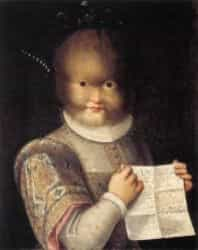

Infâme créature tristement connue à
travers le monde pour avoir martyrisé de
nombreux peuples…
Le loup-garou est un animal
mythologique d’origine européenne qui
existe depuis des siècles mais attire
l’attention principalement au 16e siècle.
Il est très utilisés dans la Littérature et
ainsi que dans le cinéma, grâce à leur
popularité.
Racine
lykánthrôpos (lúkos / loup et
ánthrôpos / homme)
Pourquoi un loup ? et non pas un autre
animal ?
L’explication remonte à la mythologie
grecque. Il existait un roi nommé Lycaon
qui aurait donné à Zeus de la chair
humaine qui lui-même appréciait
beaucoup. Zeus furieux en apprenant la
vérité, transforma lui et ses fils en loups.
C’est de la que vient le vice et le désir
pour la chair humaine des loups-garous.
Zeus chasse Lycaon
Anéantir la bête
Des milliers de personnes ont été
soupçonnés d’être des loup-garou au
cours du temps, la plupart étaient
exécutées ou brûlées.
Dans certains pays, il était possible de
soigner le malade, et les seuls moyens
pouvant les soigner étaient : soit les
potions préparées à bases d’aconit plus
connu sous le nom d’Aconit Tue-Loup,
plante très toxique qui agissait comme un
anesthésique qui pouvait également
ralentir le pouls et le rythme cardiaque.
Soit l’alternative qui consistait à
exorciser le sujet qui invoquait de
nombreuses prières et interventions
chirurgicales pour libérer la bête.
Aconit Tue-Loup
La science renverse le mythe
Avec le progrès scientifique, de
nombreuses recherches ont été faites et
les scientifiques ont réussi à expliquer
pourquoi le mythe du loup-garou a fait
beaucoup parler de lui.
Voici quelques maladies, qui étaient
supposément mal interprétés :

Enfant atteint de hypertrichose
-Hypertrichose, une
maladie génétique qui
se manifeste par une
apparition et croissance
de poils partout sur le
corps.
-La porphyrie est aussi une maladie
génétique qui se manifeste par une
croissance de poils qui génère la
défiguration des dents et doigts, et
entraînant le sujet à la folie, lorsqu’il est
exposé à la lumière. Ce qui est similaire à
la transformation en loup-garou lors
d’une nuit de pleine lune.
-Les loups étant l’un des principaux
porteurs de rage, cette maladie entraîne
un comportement animal et une
excitation anormale. D’où la morsure
d’un loup/loup-garou était considérée
comme l’une des causes à la transmission
de la lycanthropie.
Après de nombreuses recherches, les
scientifiques affirment que la
lycanthropie ne serait pas une maladie
qui manifeste chez l’homme par une
transformation physiologique, mais
plutôt une maladie psychologique.
Conclusion
Depuis la nuit des temps la lycanthropie
fait terreur à travers le monde, mais rien
ne peut prouver leur existence ni leur
inexistence. On ne devient pas loup-garou, c’est quelque chose qui sommeille
très profondément en nous.